ApolloCut wears its blindfold like its icon: it cannot see your footage, because your footage never leaves your machine. A professional timeline, keyframed effects, honest color — rendered by FFmpeg, owned by no company, free forever.
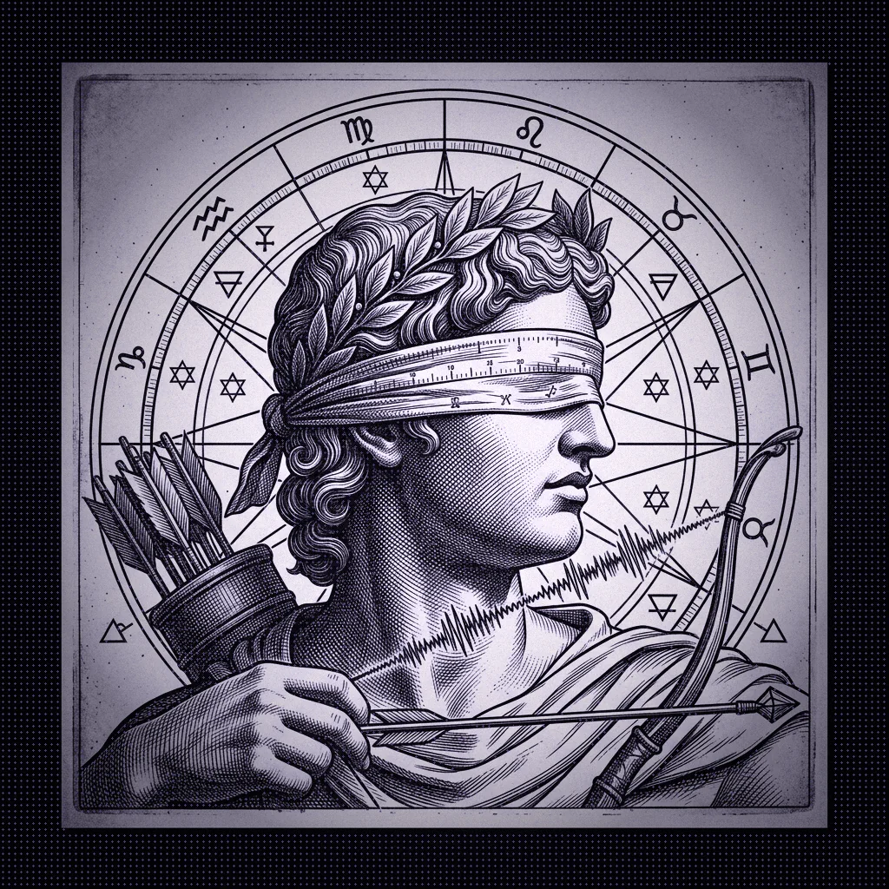
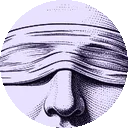
Six powers carved in copper — the whole professional loop, told as temple allegories. No names on the marble: only what they do for your cut.
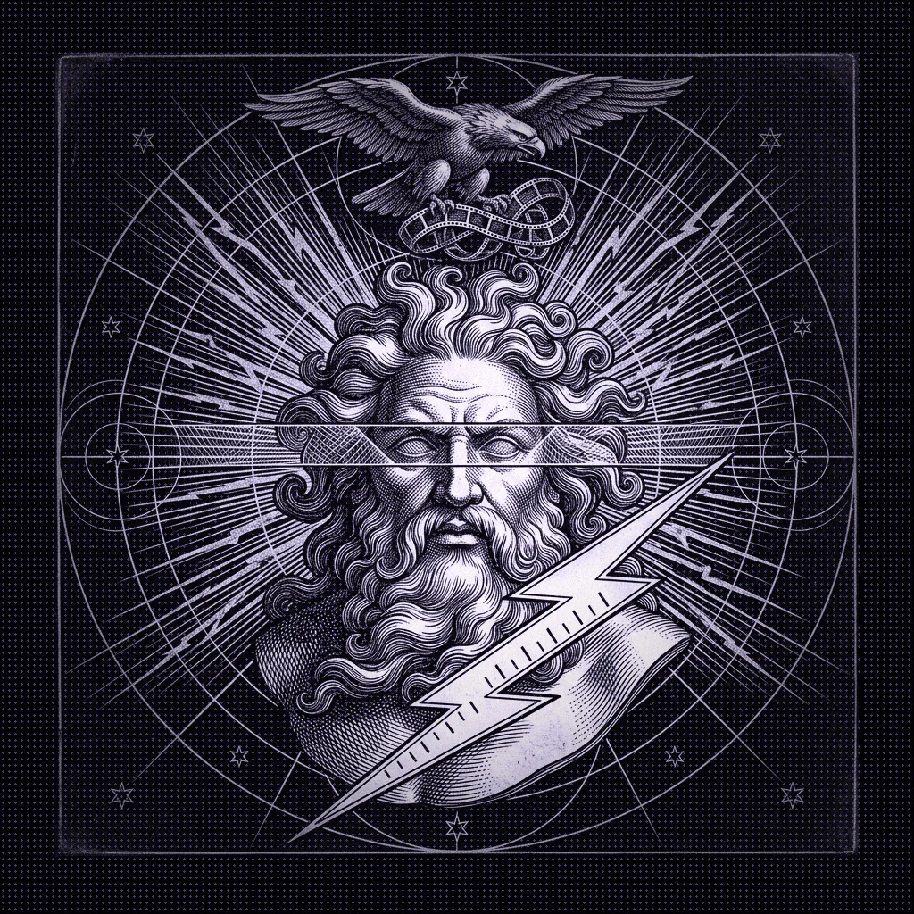
Renders at storm-speed — real-time preview with WebGL, hardware-aware export chains, no waiting rooms.
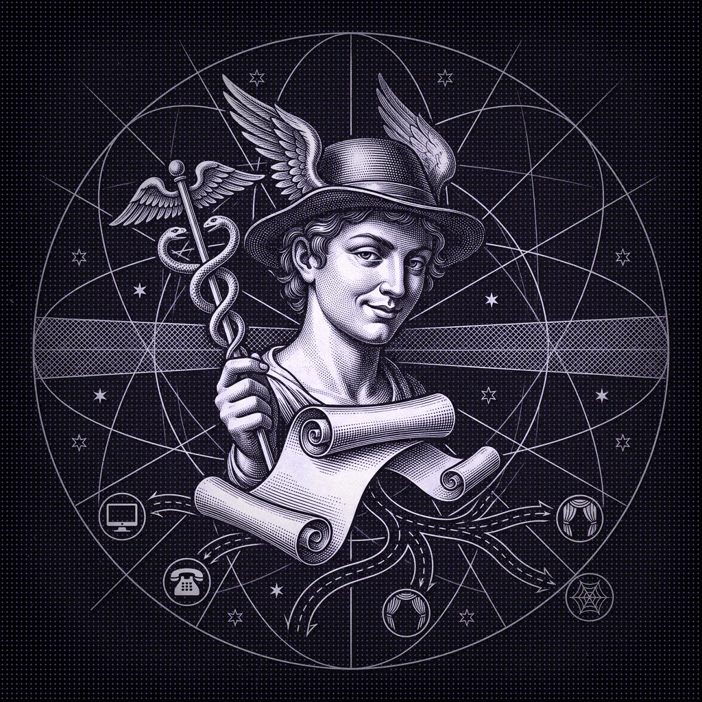
Exports open every road — H.264, HEVC, ProRes, WebM, GIF, WAV, MP3. Any device, any platform, every fork of the way.
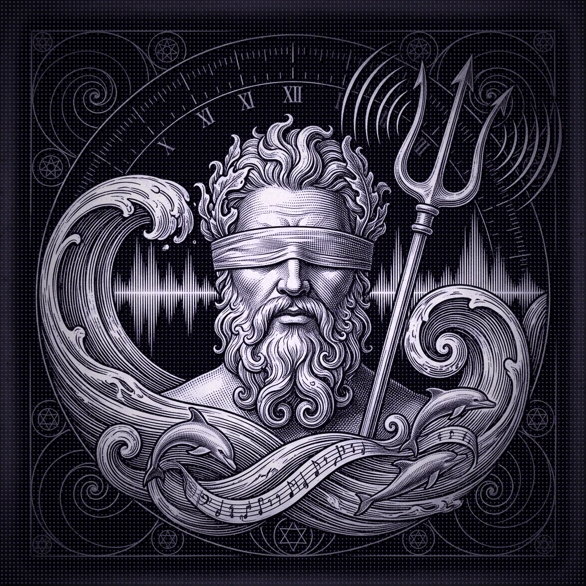
The ocean of sound, tamed — per-clip gain, drawn fades, solo/mute, live master meters, one-click loudness normalization.
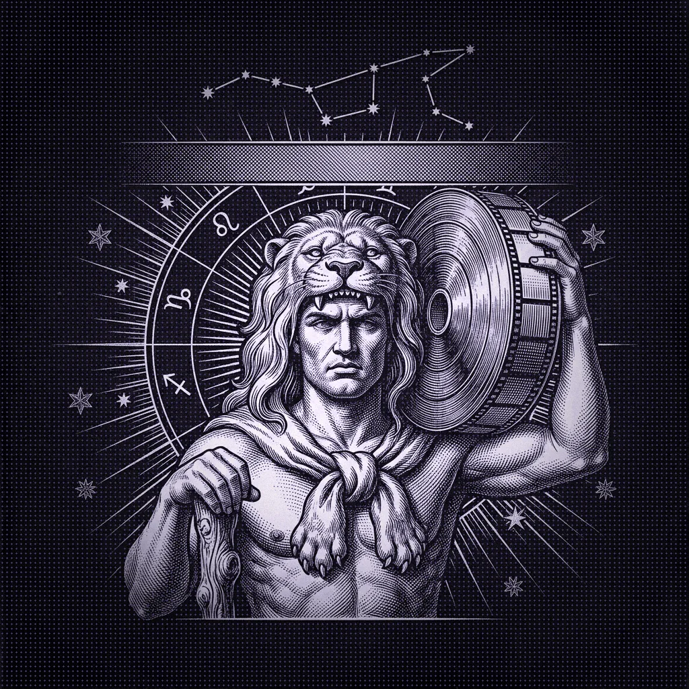
Carries 4K and beyond without stumbling — nest sequences, drop hours of footage, the spine holds.
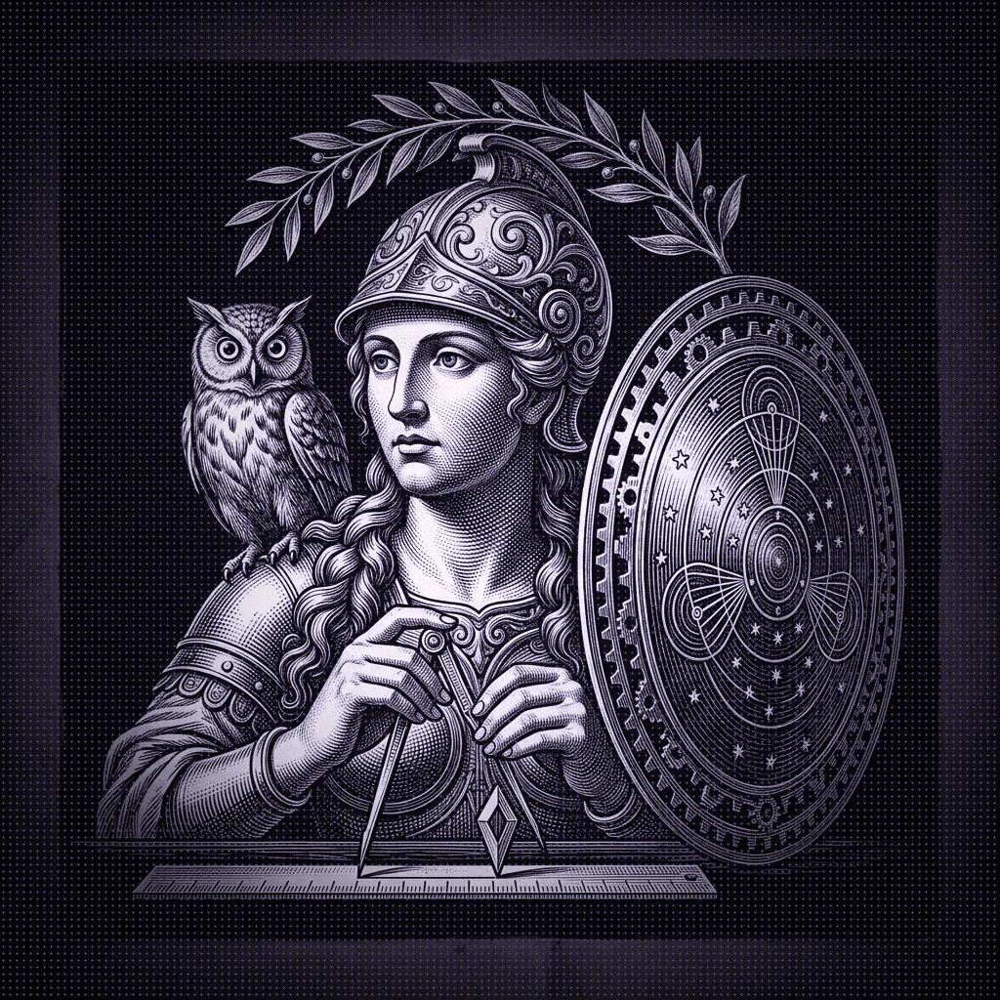
The precise art — blade at the playhead, ripple-delete, magnetic snapping, markers, sub-frame keyframes.
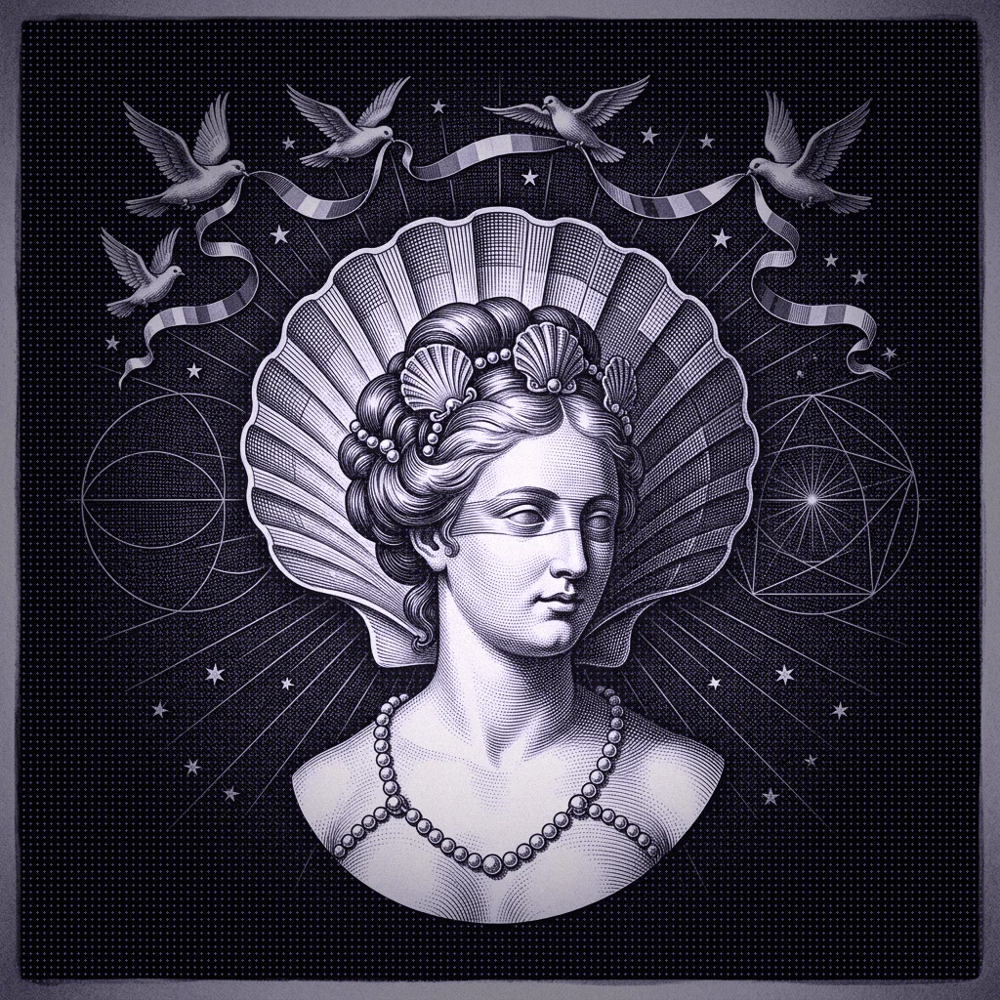
Riches of color — wheels, curves, levels, LUT-ready chains, adjustment layers grading whole stacks at once.
Built by continuous integration on three altars at once — Windows, macOS and Linux receive the same blessing with every release, installed in one file each.
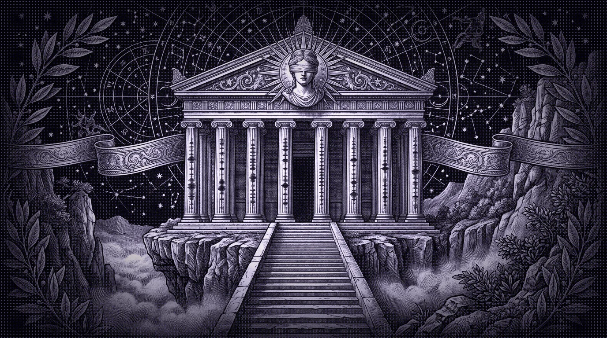
The desk where the work happens — program monitor over a multi-track timeline, waveform lanes beneath, the keyboard grammar editors already speak.
No tutorial gauntlet, no signup wall. From first contact to first clean cut in minutes.
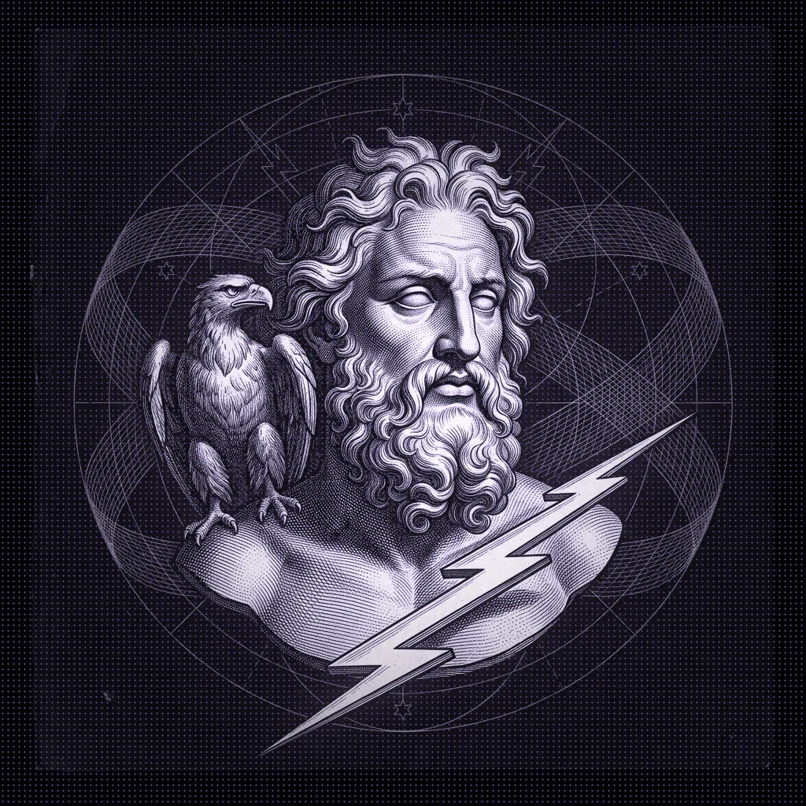
Grab one file per world from Releases. Electron runtime, FFmpeg engine, the whole studio inside.
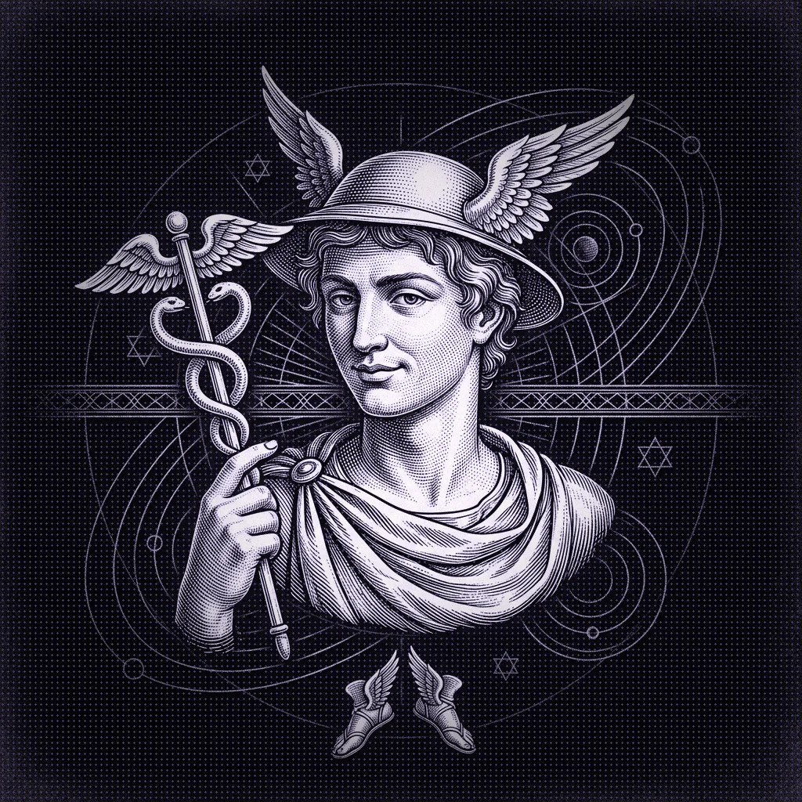
Run it. Windows may wave SmartScreen (young unsigned project — choose More info → Run anyway). Shortcuts land on Desktop and Start.
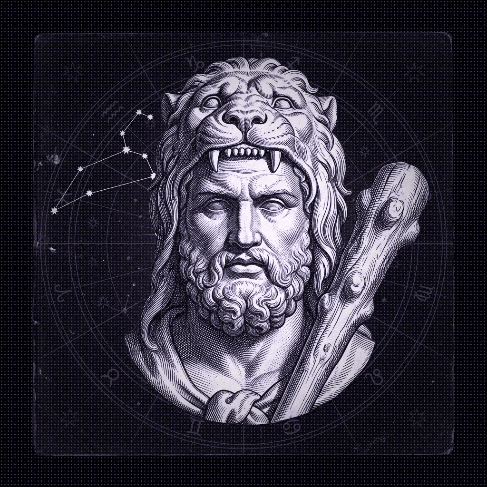
Drop media, Ctrl+K the blade, keyframe a zoom, Ctrl+Shift+E to Pro Export. Mp4 on your disk — nowhere else.
FAQ — the fine print, revealed to be exactly as thick as it always claimed: none.
Truly free — MIT licensed, no premium tier, no watermark, no trial timer. The exchange is only this: it's young software built in the open, and your issue reports sharpen it.
No. One hundred percent local — no accounts, no telemetry, no network calls in the editor code. Drop an NDA project inside; it never leaves your disk.
An unsigned open-source exe is "unknown" to SmartScreen. Click More info → Run anyway. The source is public — you can build the identical installer with npm run dist and compare.
Run the newer installer over the old — settings and projects survive. Releases are built by GitHub Actions on every v* tag, and the app itself checks politely in the background.
Join the first generation of editors who serve no subscription — only the craft under Apollo's gaze.